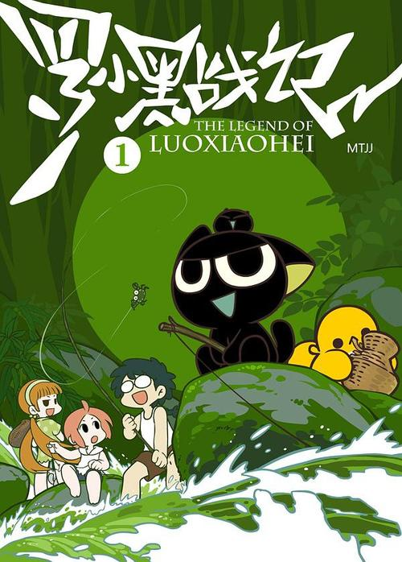

|
雷神 |
敢死队 |

罗小黑战记 |
哪吒 |
《哪吒》（NeZha）
编 剧饺子
制片人魏芸芸、刘文章
类 型 动画电影
主 演 吕艳婷，囧森瑟夫，瀚墨，陈浩，绿绮，张珈铭，杨卫
片 长 110分钟
上映时间 2019年7月26日
天地灵气孕育出一颗能量巨大的混元珠，元始天尊将混元珠提炼成灵珠和魔丸，灵珠投胎为人，助周伐纣时可堪大用；而魔丸则会诞出魔王，为祸人间。元始天尊启动了天劫咒语，3年后天雷将会降临，摧毁魔丸。太乙受命将灵珠托生于陈塘关李靖家的儿子哪吒身上。然而阴差阳错，灵珠和魔丸竟然被掉包。本应是灵珠英雄的哪吒却成了混世大魔王，这调皮捣蛋顽劣不堪的哪吒却徒有一颗做英雄的心。然而面对众人对哪吒的误解和即将来临的天雷的降临，哪吒是否命中注定会立地成魔，他将何去何从